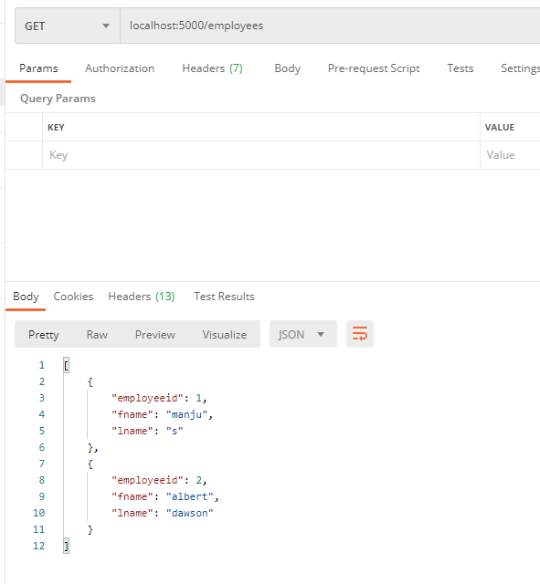
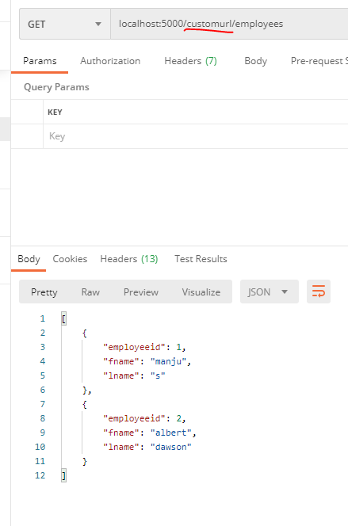
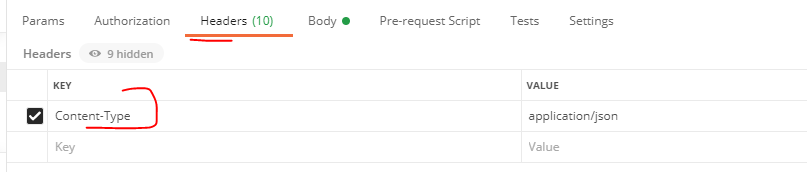
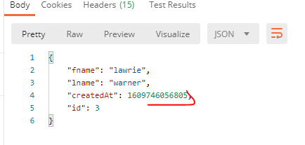
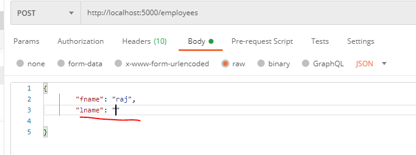
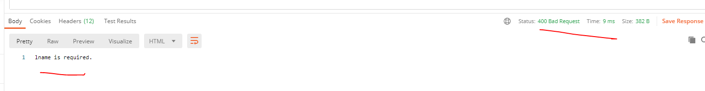
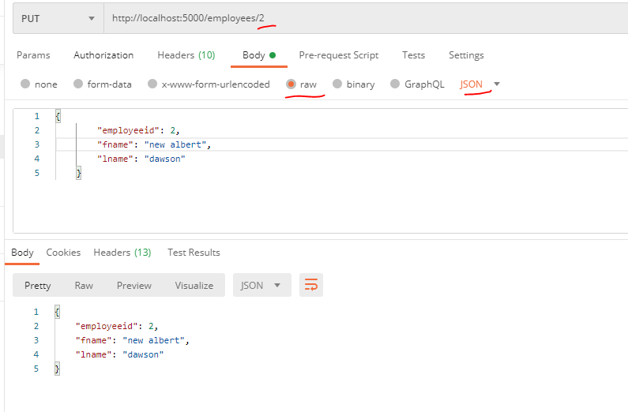

Customing JSON Server 04th Jan 2021
In this blog we will learn more about JSON Server, particularly how to customize it to our needs. If you want to learn the basics of JSON Server like what it is,how to set up and it's basic usage, then please refer to the JSON server basics blog JSON server basics
If you know about basics of JSON Server already, you know that it is a great way to setup up a full fake REST API for front-end development,may be even is less than "30 seconds" as their website claims. However,real time scenarios are little more challenging and it’s not always that you can use something straight out of the box. You need to tweak certain things and this is where customizing JSON server is required. I will try to cover quite a few number of common scenarios so that you know what all can be done. Actually even knowing that you can tweak JSON server in itself is a learning :-)
I am also attaching my video tutorial on the same
Setting up JSON Server
- Create a folder in your C drive. I created CustomJSONServer
- Inside the folder run npm init -y
- Then run npm install json-server --save-dev
-
Initial db.json looks like below. I removed the default
endpoints and created my own employees API.
{ "employees": [ { "employeeid": 1, "fname": "manju", "lname": "s" }, { "employeeid": 2, "fname": "albert", "lname": "dawson" } ] } -
If you want to configure and customize your JSON Server, you
need a server.js in your CustomJSONServer folder you
created above. Create server.js and copy below code. I
have added numbers as comments so that i can refer it below when
explaining
// server.js const jsonServer = require('json-server') //1 const server = jsonServer.create()//2 const router = jsonServer.router('db.json')//3 router.db._.id = 'employeeid';//3a const middlewares = jsonServer.defaults()//4 server.use(middlewares) //5 // To handle POST, PUT and PATCH // you need to use a body-parser. Using JSON Server's bodyParser server.use(jsonServer.bodyParser); //6 Redirect URL's- // Have all URLS with customurl redirected server.use( jsonServer.rewriter({ "/customurl/*": "/$1", }) ); //7 Ensure every POST has a createdAt date server.use((req, res, next) => { if (req.method === "POST") { req.body.createdAt = Date.now(); } // Continue to JSON Server router next(); }); //8 Ensure every POST of an employee, it has lname for sure. Otherwise return 400 and a message server.post("/employees/", function(req, res, next) { const error = validateRequest(req.body); if (error) { res.status(400).send(error); } else { next(); } }); server.use(router) server.listen(5000, () => {//10 using 5000 port console.log('JSON Server is running') }) function validateRequest(employee){ //9 validate function used by POST above if (!employee.lname) return "lname is required."; }
Point by point explanation of above server.js file
Comments 1 through 5 are standard across all server.js
files.For the server.js, we need to create the server, set the
database as the router, and use the default middlewares.
Comment 3a is the place where we customize the id
property.By default JSONserver uses "id" property/key in db.json
file. But in this eg I will show you how to even customise the id
key.I will rather use "employeeid" as id therefore in 3a comment I
am setting up router.db._.id = 'employeeid';
Comment 6 Suppose your API sits behind '/customurl' route . So a rewriter rule is written to redirect all calls with ‘/customurl/*’ to the root ’/$1’. The ‘$1’ here captures whatever comes after /customurl/. For eg, http://localhost:5000/customurl/employees will be redirected to http://localhost:5000/employees where the JSON server has all the data available through the db.json file
Comment 7 When there is a POST request to any end point ensure that there is a "createdAt" property attached and attach today's date to it (using Date.now()). We will see that in the POST section below
Comment 8 and 9 You can ensure that when ever there is a new employee added through POST,the employee will have a last name.If we try to insert an employee with no last name(lname),then API throws a 400 error and will return appropriate error message. You can ofcourse validate many more scenarios. We will see this in detail below POST- request validation eg Comment 9 is just the function which validates the request for lname
Comment 10 actually says start the server at port 5000.You can provide any other available port as well
Now you are done with the configured of the JSON server,lets try out the API's
Starting the server and actually testing GET, POST,PUT
Start the server using command node server.This should start the server on port 5000
Use any REST API client like Postman to test out the API's.
I will use the employees end point and will show you GET,POST and
PU. You can try other options like DELETE, PATCH etc on your own
(will be easy once you do GET,POST, and PUT).
I have shared all the requests i explained below in my github
repository. You can download it here
Git hub link to JSONServerDemo
You can download and import
"Customjsonserverapieg.postman_collection" into your
Postman client so that you can simply start using it and will save
you some typing. I have a separate blog to show how to use POSTMAN
show how to import/export collections and how to use
workspaces,swap between workspaces etc.All of this is beyond the
scope of the current article
GET
GET Get all Employees.Currently we have 2 employees
GET-Check if redirect works
Above in server.js, we configured rewrite.Basically we said all requests to http://localhost:5000/customurl/employees will be redirected to http://localhost:5000/employees Let's try that out.
As you can see rewrite works as well
POST
Above in server.js, we configured a createdAt property. So every POST request we do from here we should see createdAt property

Ensure that you add content-type as application/json to header of the request 
In the response you will notice that "createdAt" property is generated. If you do a GET now, you will see createdAt property for 3rd employeeid.

POST- request validation
Above in server.js, we configured a createdAt property. So every POST request we do from here we should see createdAt property
Ensure that you add content-type as application/json to header of the request. In the Response you will notice that you get a 400 error and a message which says lname is required as we had not provided lname for "raj".

PUT
You can update any employee,say you want to update fname of employeeid 2.Let's update fname to new albert
Donot forget to make the changes(marked in red in the above image) i.e copying the body as raw, type as JSON Also, like we did in POST request, add content-type as application/json to header of the request. Another thing to notice is the end of 'URL'.We send 2 at the end which is nothing but the employeeid we want to update
And that's it. Hope you undertood how to customize JSON server. .Email me at "thizismanju@gmail.com" incase you have queries. Alternatively, you can fill the "CONTACT" form or drop a comment below